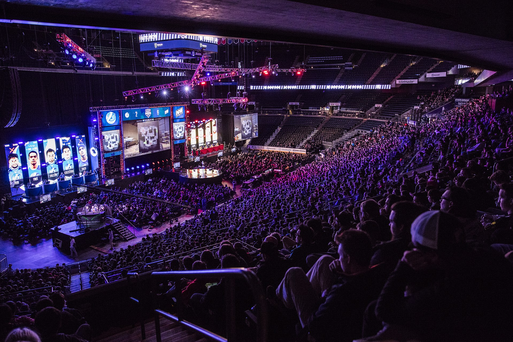

O cenário profissional de Ofensiva Global consiste em torneios organizados por organizações de terceiros e torneios organizados ou co-patrocinados pela Valve, referidos como Majors. Os principais têm prêmios maiores; originalmente fixado em US $ 250.000, os prêmios para maiores aumentaram, com o MLG Columbus 2016 tendo o primeiro conjunto de US $ 1.000.000.
Em 2014, ocorreu o "primeiro escândalo de fixação de grandes partidas" na comunidade Ofensiva Global, onde a equipe iBuyPower propositalmente perdeu uma partida contra o NetCodeGuides.com. A equipe foi posteriormente banida pela Valve, embora a ESL tenha banido a equipe de seus torneios em 2017. Eles ainda não podem jogar em Majors.
Em outubro de 2015, várias organizações profissionais de eSports com equipes de Counter-Strike anunciaram a formação de um sindicato que estabeleceu várias demandas para a participação futura no torneio. O anúncio foi um e-mail publicado publicamente, escrito pelo CEO da Natus Vincere, Alexander Kokhanovsky, enviado aos organizadores dos principais eventos de e-sports. Entre essas demandas, havia o aviso de que equipes do sindicato não participariam de um torneio com um prêmio de menos de US $ 75.000 para Counter-Strike: Global Offensive e US $ 100.000 para Dota 2. Entre as equipes anunciadas estavam Natus Vincere, Team Liquid, Counter Logic Gaming, Cloud9, Virtus.pro, Team SoloMid, Fnatic, Ninjas em Pyjamas, Titan e Team EnVyUs. Em 2016, a World eSports Association (WESA) foi fundada pela ESL e muitas equipes de eSports, incluindo Fnatic, Natus Vincere, Team EnVyUs e FaZe Clan, embora a última tenha saído logo após sua formação. No comunicado, a WESA disse que "profissionalizaria ainda mais os eSports, introduzindo elementos de representação de jogadores, regulamentos padronizados e compartilhamento de receita para as equipes". Além disso, eles também planejam ajudar os fãs e os organizadores "buscando criar agendamentos previsíveis".
As organizações de esportes Cloud9 e Dignitas, entre outras, anunciaram planos em fevereiro de 2020 para lançar o Flashpoint, uma liga baseada em franquias do Counter-Strike, para combater as preocupações sobre o estado das atuais ligas de promoção / regulamentação, com a liga pertencendo a as equipes em vez de uma única organização, como no caso da Liga Overwatch.